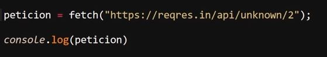
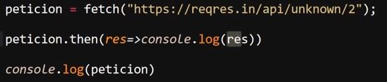
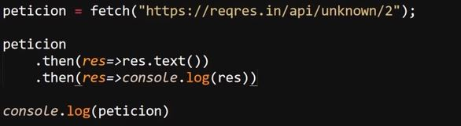
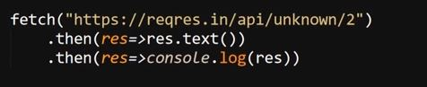
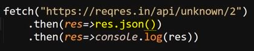
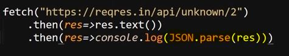
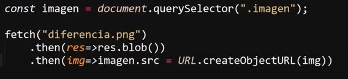
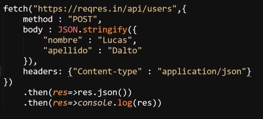
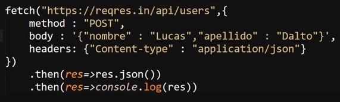
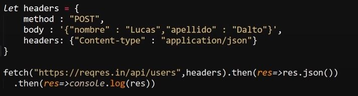

Se trata de una de las formas más actuales de trabajar con el objeto "XMLHttpRequest", de hecho se trata del reemplazo de AJAX como método para trabajar con las consultas, debido a lo reciente que es y el tiempo que pasó "AJAX" como el método estandarizado para trabajar con las peticiones, el método "fetch" aún no se puede considerar el más utilizado, sin embargo es el método recomendado actualmente.
De hecho, junto con la biblioteca "Axios", la cual lo reemplazó como método predilecto para trabajar con las peticiones, sin embargo actualmente es utilizada muy ampliamente en la industria, su uso se recomienda para aquellas ocasiones en las que la página no realiza muchas peticiones, sino que las realiza de una forma más puntual, aun así "fetch" se trata de una muy buena forma de trabajar las peticiones a un servidor.
Este método se basa en promesas para realizar las peticiones, por lo tanto la respuesta de estas se recibe en forma de una promesa encapsulada, una promesa encapsulada es aquella cuyos datos se encuentran encapsulados, razón por la cual el objeto "fetch" posee diversos métodos para convertir el tipo de datos a uno que sea válido para su uso.
Lo que hace superior a fetch sobre AJAX es lo sorprendentemente reducida y simple que es la sintaxis de las peticiones, ya que este método requiere que se definan muchos menos aspectos que los métodos anteriores, tanto es así que incluso tiene el método GET definido como el método por defecto, razón por la cual ni siquiera es necesario declararlo salvo que se desee usar otro.
A continuación se muestra un ejemplo sobre cómo inicializar la petición con "fetch", en la cual en una sola línea de código se hace el equivalente a declarar el objeto "XMLHttpRequest" (incluyendo la versión de Internet Explorer), definir el método (Get por defecto) y se indica la dirección a la que se realizará la consulta.
Ejemplo

De esta forma el método "fetch" reduce significativamente las líneas de código y los datos necesarios para operarlo, por su parte debido a que la promesa se encuentra encapsulada se necesita utilizar el método ".then" para definir qué acción aplicarle:
Ejemplo

En este ejemplo se busca obtener la promesa para imprimirla en pantalla, debido a que se encuentra encapsulada se utiliza el método ".then" el cual permite ejecutar una acción después de que la promesa se resuelva y encadenar acciones que deben ser realizadas en secuencia, en este caso se usa para aplicar una función flecha, a la cual se le pasa la promesa como dato en la variable "res" y luego se imprime en consola.
Por otro lado para obtener los datos retornados dentro de la promesa primero es necesario desencapsularla, para esto se utiliza el método ".text()", el cual retorna los datos desencapsulados:
Ejemplo

En este ejemplo se utiliza dos veces la propiedad ".then", en la primera ocasión se usa para emplear la propiedad ".text" la cual retorna la promesa desencapsulada en formato de texto, y una vez ya se puede acceder a la promesa se usa una segunda vez para imprimirla en pantalla.
"fetch" es tan versátil que incluso se puede resumir el código aún más, ya que no es necesario que se declaren variables para su uso.
Ejemplo

De esta forma en un conjunto muy reducido de líneas se puede declarar una petición, obtener una promesa como resultado y acceder a los datos encapsulados en esta, sin embargo el método ".text" únicamente retorna los datos en tipo cadena de texto, debido a esto existen otros métodos que permiten retornar los datos de otras formas:
-
.JSON( ): Se trata del método que permite retornar los datos en formato JSON para su uso, este método por sí mismo permite deserializar el objeto a la vez que lo desencapsula.

Nota: Este segundo código arrojaría el mismo resultado pero no utilizaría el método ".JSON" el cual es recomendado

-
.Blob( ): Se trata de un método que permite crear objetos "blob" los cuales son objetos que permiten manipular archivos binarios inmutables como por ejemplo fotos, videos, audio entre otros, en otras palabras este método permite crear un objeto especial para manipular elementos multimedia, por lo tanto el método ".blob" permite recibir elementos multimedia con "fetch"

En este ejemplo se selecciona un div HTML con la variable "imagen", luego se usa "fetch" para obtener la imagen (simula una dirección), se usa ".then" con ".blob( )" para crear el objeto "blob" y poder manipular la imagen, y por último se toma la variable "imagen" (div), se usa el método "src" para vincular una dirección url y por último se iguala al url generado por el método ".createObjectURL" del objeto "URL", el cual crea una url temporal para alojar el objeto "blob" y poder visualizar la imagen.
En otras palabras en este ejemplo se accede a la imagen que podría estar ubicada en x dirección, se crea el objeto "blob" correspondiente para su manipulación y luego se inserta en el contenedor HTML.
Hacer un Envío POST con Fetch
Para generar un envío de datos con el método POST se añaden varios datos en relaciones nombre/valor a la declaración del "fetch":
-
El primer dato siempre debe ser la dirección a la que se realizará el envío, este dato no posee un identificador, solo se define su valor
-
Como segundo dato se añade el método del envío, el cual se identifica con la palabra "method", seguido del nombre del método a utilizar, en este caso "POST"
-
El tercer dato corresponde al cuerpo del envío, es decir a los datos que están siendo enviados, en este caso un objeto JSON, esta parte del envío se identifica con el nombre "body" (JSON.stringify() permite serializar el objeto JSON para su envío)
-
Como último dato se añaden los "headers" del envío, los cuales le indican al servidor el tipo de contenido que se está enviando, por lo cual estos dependen del tipo de información que se esté enviando

De esta forma se realiza un envío de datos "POST" con "fetch".
Nota: Si el JSON del "body" es bastante reducido se puede obviar el "JSON.stringify()" y se puede reemplazar con backticks (``) de la siguiente forma:

Nota: Una alternativa de estructura más recomendable es almacenar todos los datos del envío (a excepción de la dirección) en una variable y llamarla al definir "fetch", ya que esto permite mejorar la legibilidad del código:
